DevTool — Pico W Development Companion¶
A Tkinter GUI application for developing on the Raspberry Pi Pico W with the Waveshare 2.13" e-ink display. Provides a display emulator, serial monitor, firmware flash utility, asset manager, GPIO reference, USB/Wi-Fi connection walkthrough, and built-in documentation — all in one window.
Requirements¶
| Requirement | Notes |
|---|---|
| Python 3.9+ | Comes with most Linux distributions |
| Tkinter | Usually included with Python. On Arch: sudo pacman -S tk |
| pyserial | For USB serial communication with the Pico W |
| Pillow (optional) | For PNG export/import and better text rendering |
Installation¶
Install System Dependencies¶
Tkinter is a Python binding to Tcl/Tk. It's usually bundled with Python, but some distros package it separately.
Install Python Dependencies¶
This installs:
pyserial— required for the serial monitor and image uploadPillow— optional but recommended for PNG support and better text rendering
Verify¶
If this prints OK, you're ready to go.
Automatic dependency gate
When you run python3 DevTool/devtool.py directly, the DevTool automatically detects missing dependencies and offers to install them for your distro. You don't need to install manually if you prefer.
Launching the DevTool¶
From the project root:
The application opens with eight tabs across the top:
| Tab | Purpose |
|---|---|
| Display Emulator | Draw and design 250x122 e-ink images |
| Serial Monitor | View live printf output from the Pico W |
| Flash Firmware | Flash .uf2 files to the Pico W |
| Assets | Browse and manage saved display images |
| Programs | Preview, stream, or deploy animated programs to the display |
| GPIO Pins | Visual pin assignment reference |
| Connect | Step-by-step USB serial and Wi-Fi connection walkthrough |
| Docs | Searchable built-in documentation for the entire application |
A log bar at the bottom shows status messages and timestamps. At startup, the DevTool runs a Docker health check in the background and reports the status of the build toolchain.
Tab 1 — Display Emulator¶
The display emulator is a 250x122 pixel canvas (scaled 3x for visibility) that exactly matches the Waveshare 2.13" V3 e-ink display. Everything you draw here is a 1-bit monochrome image — black or white only, just like the real display.

Drawing Tools¶
The toolbar at the top provides six tools:
| Tool | Description | Shortcut |
|---|---|---|
| Pencil | Freehand draw in black. Click or drag. | Default |
| Eraser | Freehand erase to white. Click or drag. | |
| Line | Click start point, drag to end point, release. | |
| Rect | Draw a rectangle outline. Click one corner, drag to opposite. | |
| Fill Rect | Draw a filled black rectangle. Same interaction as Rect. | |
| Text | Click a position, type text in the dialog. Renders to pixels. |
Size controls the brush width (pencil/eraser) and line thickness (line/rect).
Clear resets the canvas to all white.
Invert flips every pixel (black becomes white, white becomes black). Useful for creating white-on-black designs.
Pencil Tool¶
Eraser Tool¶
Line Tool¶
Rectangle Tool¶
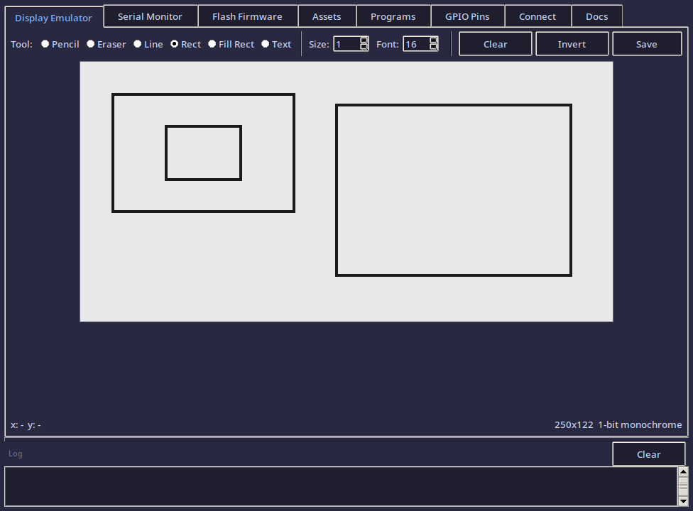
Filled Rectangle Tool¶
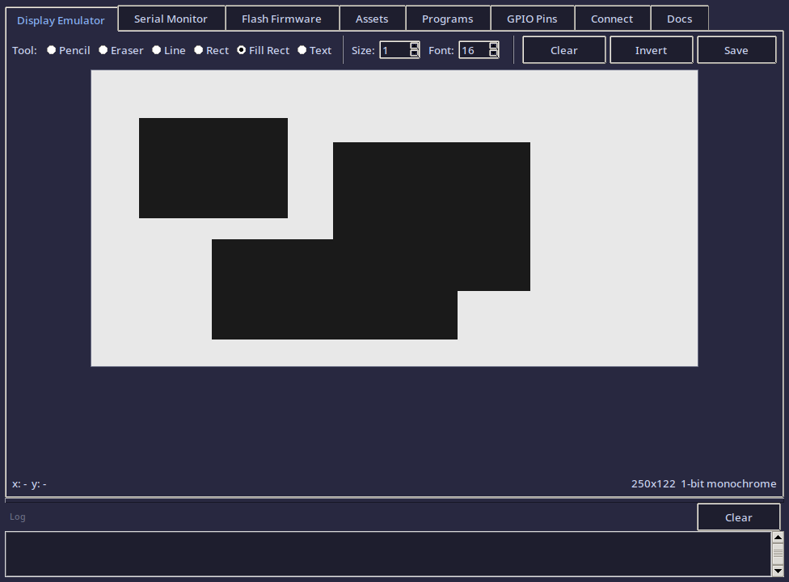
Text Tool¶
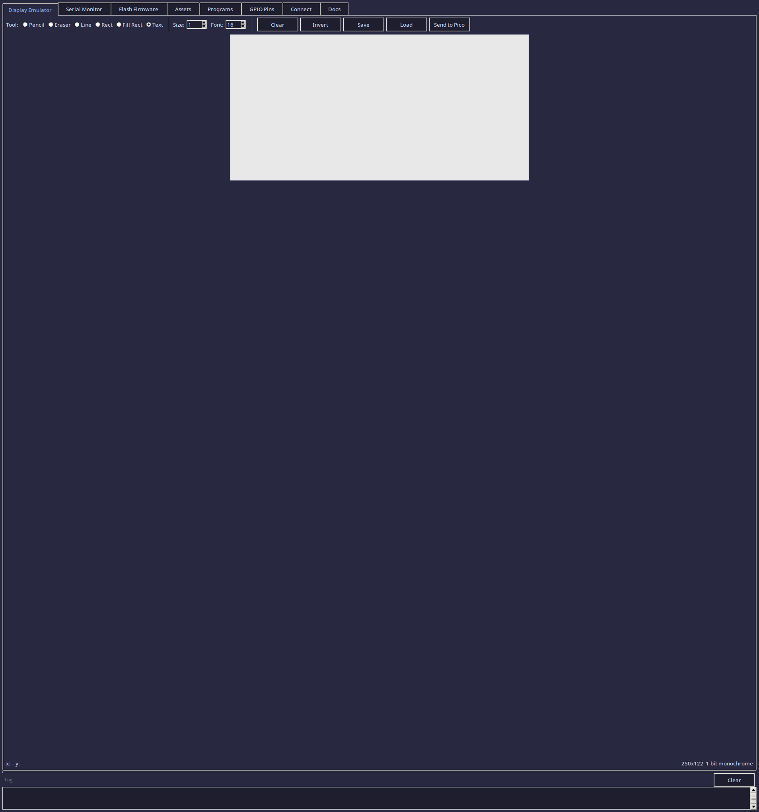
Drawing Demo¶
Here's an example using the line, rectangle, and filled rectangle tools together:
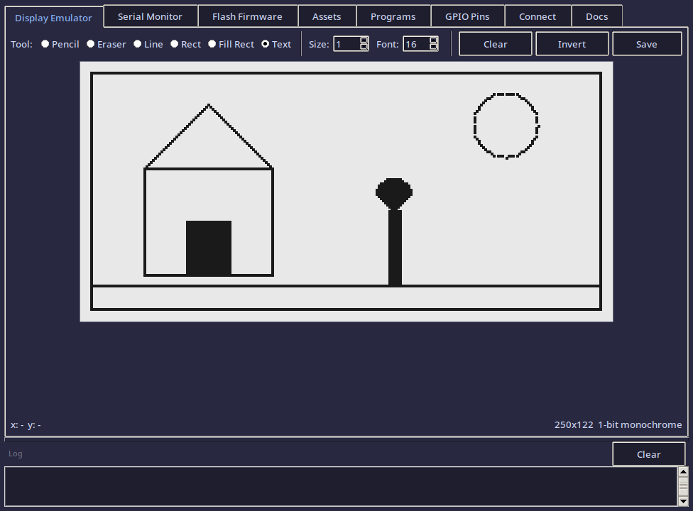
Invert Function¶
The invert function flips all pixels — useful for creating white-on-black designs:
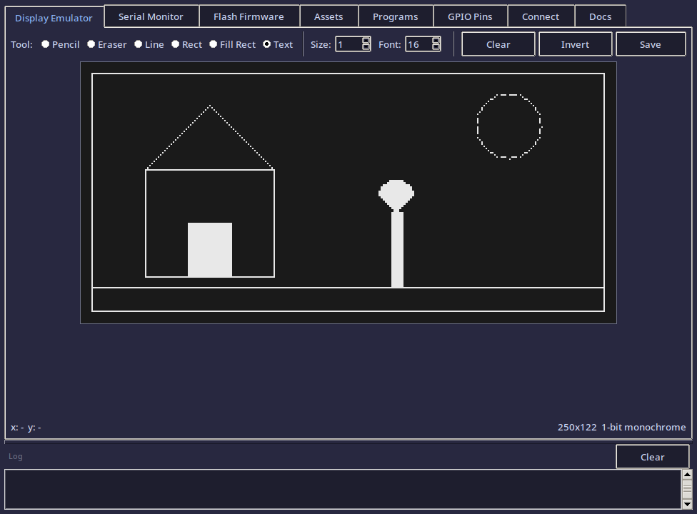
Text Tool¶
- Select Text from the toolbar.
- Set the Font size (8–48 px).
- Click anywhere on the canvas.
- A dialog appears — type your text and press OK.
- The text is rasterized into the pixel buffer.
If Pillow is installed, text renders using the DejaVu Sans Mono font at the exact pixel size. Without Pillow, text renders as filled blocks (approximate).
Saving Images¶
Click Save in the toolbar. Enter a name (no extension). Three files are created in the assets/ directory:
| File | Format | Purpose |
|---|---|---|
name.pbm |
PBM binary (P4) | Standard 1-bit image format, viewable in any image viewer |
name.bin |
Raw packed bytes | Direct upload format for the Pico W display buffer |
name.png |
PNG (if Pillow installed) | Easy to view and share |
PBM is the primary format — it's a standard image format that needs no dependencies to read or write.
BIN is the raw display buffer in the same byte layout the Waveshare driver uses: each byte holds 8 horizontal pixels, MSB first, row by row. This can be loaded directly into the display framebuffer in C code.
Loading Images¶
Click Load to open any .pbm, .bin, or .png file. The image is loaded into the canvas and can be further edited.
Send to Pico¶
Click Send to Pico to transmit the current canvas image to the Pico W over USB serial. This sends a raw byte stream with an IMG: header followed by the width, height, and pixel data.
Note
This requires firmware on the Pico W that listens for the IMG: protocol. The hello world examples don't include this — it's for future firmware development.
Tab 2 — Serial Monitor¶
A full-featured serial terminal for communicating with the Pico W over USB.
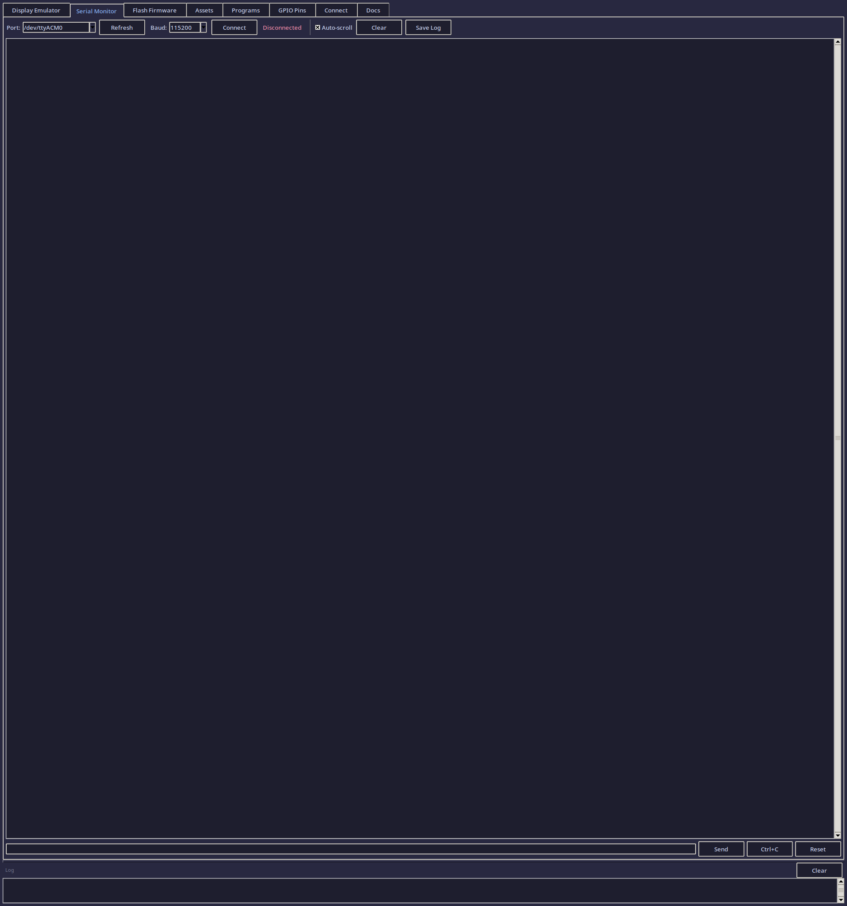
Connecting¶
- The Port dropdown auto-detects available serial devices. The Pico W typically appears as
/dev/ttyACM0. - Baud rate defaults to 115200 (matching the Pico W's USB serial configuration).
- Click Connect to open the connection.
- The status indicator turns green when connected.
If no ports appear, click Refresh. Make sure the Pico W is plugged in and running firmware (not in BOOTSEL mode).

Viewing Output¶
Serial data from the Pico W appears in the output area in real time. This is where you see printf() output from your C programs.
- Auto-scroll keeps the view at the bottom as new lines arrive. Uncheck to freeze the view for reading.
- Clear empties the output area.
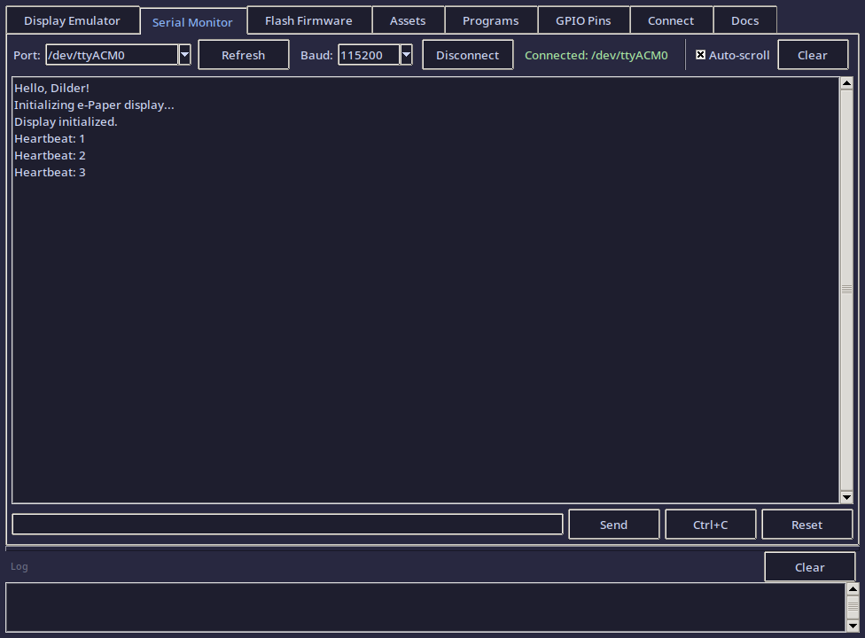
Sending Commands¶
Type in the input bar at the bottom and press Enter or click Send. The text is sent to the Pico W followed by \r\n.
Special buttons:
- Ctrl+C — sends an interrupt signal (useful for stopping running code)
- Reset — sends a soft-reset signal (Ctrl+D)
Saving Logs¶
Click Save Log to save the entire output history to a text file with a timestamped filename.
Tab 3 — Flash Firmware¶
A visual interface for flashing .uf2 firmware files to the Pico W.
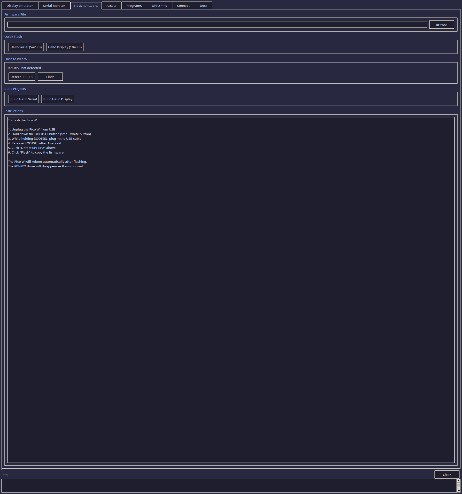
Selecting a UF2 File¶
- Browse — open a file picker to select any
.uf2file. - Quick Flash buttons — one-click selection of the pre-built hello world programs (if they've been built):
- Hello Serial —
dev-setup/hello-world-serial/build/hello_serial.uf2 - Hello Display —
dev-setup/hello-world/build/hello_dilder.uf2
- Hello Serial —
Flashing¶
- Put the Pico W in BOOTSEL mode (unplug, hold BOOTSEL, plug in, release).
- Click Detect RPI-RP2 — the tool searches for the mounted USB drive.
- Click Flash — the
.uf2file is copied to the drive. - The Pico W reboots automatically.
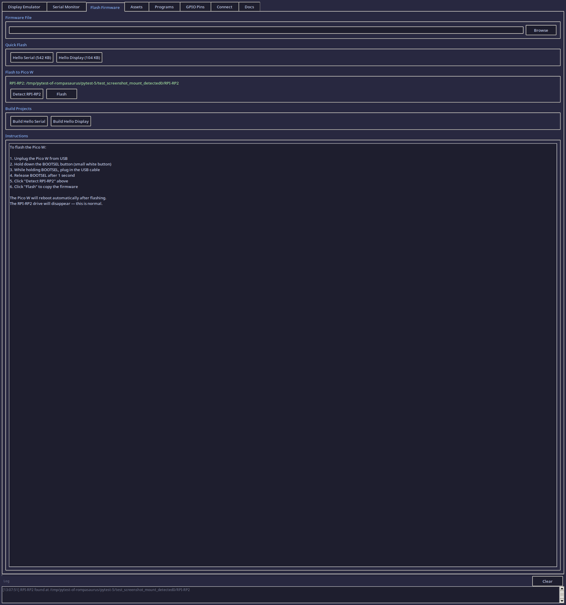
Building from Source¶
The Build Projects section has buttons to compile each hello world project directly from the DevTool:
- Build Hello Serial — runs CMake + Ninja in
dev-setup/hello-world-serial/ - Build Hello Display — runs CMake + Ninja in
dev-setup/hello-world/
Build output appears in the log bar at the bottom. The buttons handle copying pico_sdk_import.cmake and creating the build directory automatically.
Tab 4 — Asset Manager¶
Browse and manage the 1-bit display images saved in the assets/ directory.
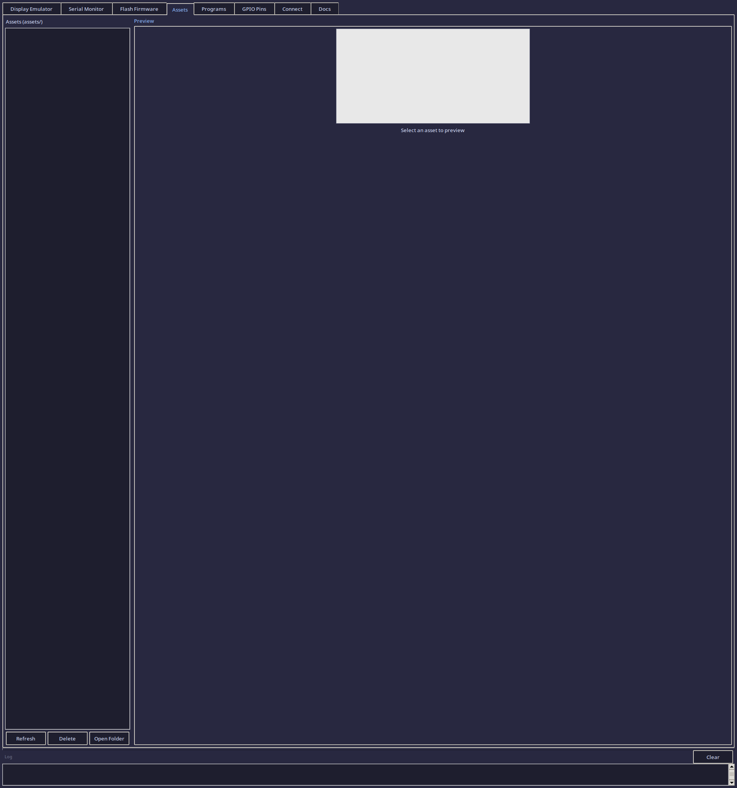
Browsing Assets¶
The file list on the left shows all .pbm, .bin, and .png files in assets/. Click Refresh to reload the list.
Previewing¶
Click any file to see a 2x scaled preview on the right. The preview shows the image as it would appear on the e-ink display.
File info (name, size, dimensions) is shown below the preview.
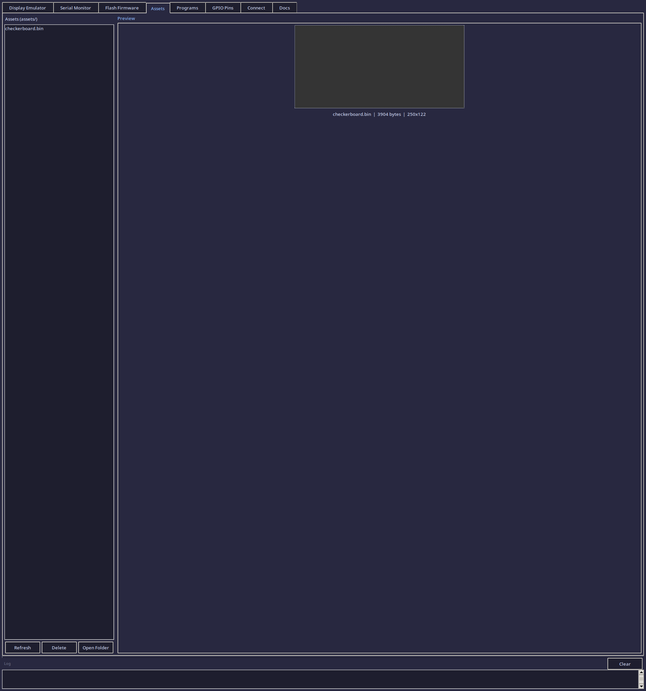
Deleting¶
Select a file and click Delete to remove it. A confirmation dialog appears first.
Open Folder opens the assets/ directory in your system file manager.
Tab 5 — Programs¶
Preview, stream, or permanently deploy any of 16 animated programs to the Pico W display.

Program List¶
Select a program from the list on the left. The preview canvas on the right shows a static frame.
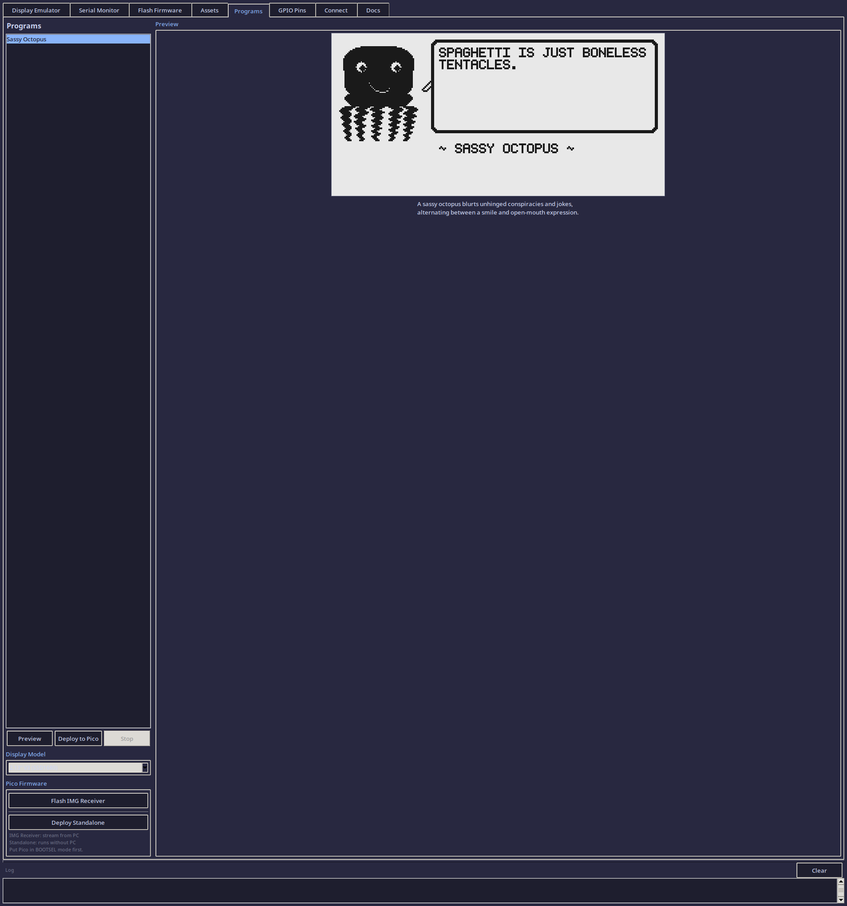
Previewing¶
Click Preview to run the animation in the emulator. Click Stop to halt.
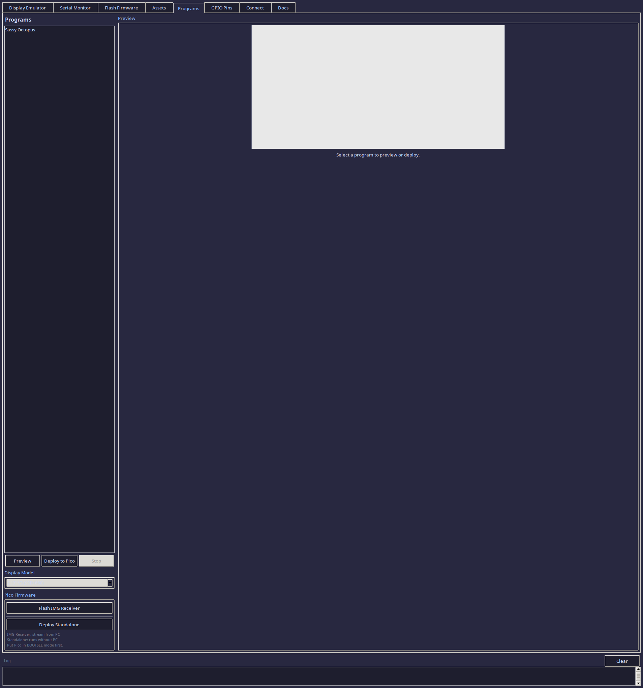
Deploy to Pico (Streaming)¶
Click Deploy to Pico to stream frames over USB serial. Requires IMG-receiver firmware — use Flash IMG Receiver to build and flash it via Docker.
Deploy Standalone¶
Click Deploy Standalone to bake the animation into standalone firmware:
- Pre-renders all frames in Python
- Writes
frames.hC header with pixel data - Builds firmware via Docker ARM cross-compiler
- Flashes
.uf2to Pico BOOTSEL mount
After flashing, the Pico runs independently — no PC needed.
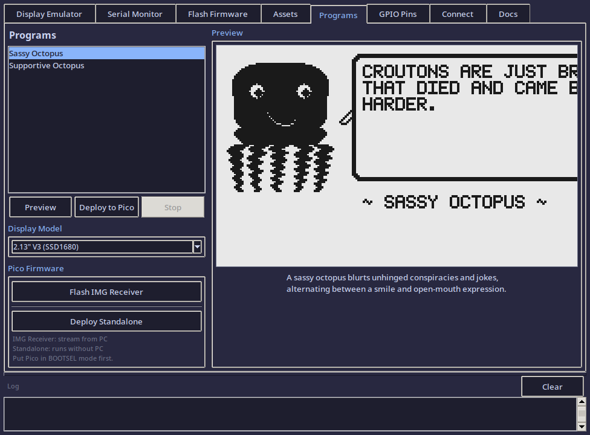
Available Programs¶
The DevTool ships with 16 octopus programs, each with unique facial expressions, body animations, and themed quote lists:
| Program | Eyes | Mouth | Body Animation | Quotes |
|---|---|---|---|---|
| Sassy | Normal | Smirk/smile | Gentle breathing | 196 |
| Supportive | Normal | Smirk/smile | Gentle breathing | 160 |
| Angry | V-brows, glaring | Frown | Puffed up, tremble | 45 |
| Conspiratorial | Misaligned | Wobbly sine | Lean + wave | 47 |
| Sad | Droopy brows | Gentle frown | Drooped, deflated | 35 |
| Chaotic | Spiral rings | Zigzag | Wild distortion | 40 |
| Hungry | Looking up | Drooling oval | Lean upward | 30 |
| Tired | Half-closed lids | Yawn | Sagging, melting | 30 |
| Slap Happy | One squint, one manic | Wobbly grin | Sway side to side | 30 |
| Lazy | Nearly shut | Flat line | Custom body: tentacles draped right | 30 |
| Fat | Wide happy | Smile + cheek puffs | Custom body: wider dome, thicker tentacles | 30 |
| Chill | Side-glancing | Half-smile | Subtle lean | 30 |
| Creepy | Heart-shaped | Tongue out | Rhythmic pulse | 30 |
| Excited | Sparkle crosses | Wide grin | Bouncing | 30 |
| Nostalgic | Looking up-right | Wistful smile | Gentle sway | 30 |
| Homesick | Teary | Wobbly line | Curled inward | 30 |
Each program can be previewed in the emulator, streamed to the Pico via USB, or deployed as standalone firmware.
Tab 6 — GPIO Pin Reference¶
A read-only visual reference showing the Pico W's 40-pin header with all Dilder project assignments highlighted:
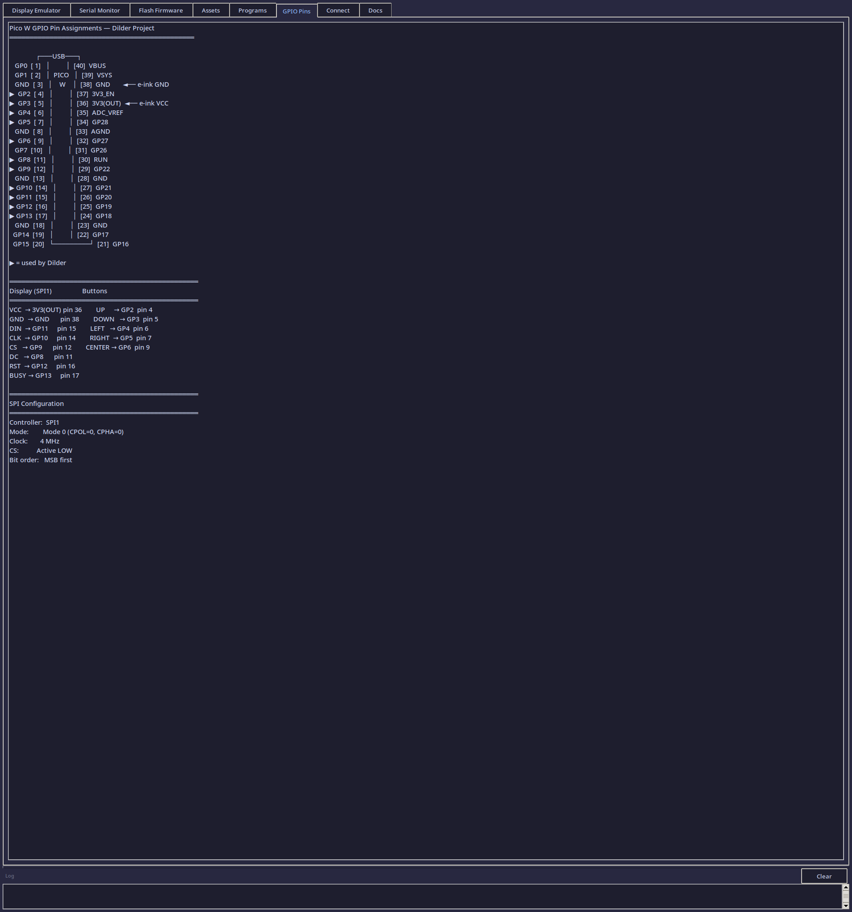
- Display pins (SPI1): GP8–GP13
- Button pins: GP2–GP6
- Power: 3V3(OUT), GND
- SPI configuration: Mode 0, 4 MHz, MSB first

This tab is a quick reference so you don't need to switch to the documentation while developing.
Tab 7 — Connection Utility¶
A guided walkthrough for connecting the Pico W to your computer. Switch between USB Serial and Wi-Fi modes using the radio buttons at the top.
USB Serial Walkthrough¶

Four steps, each with a live Check button that verifies the current state:
| Step | What it checks |
|---|---|
| Step 1 — Plug in the Pico W | Runs lsusb to detect the Pico W USB device (vendor ID 2e8a). Confirms the cable is a data cable. |
| Step 2 — Verify serial port | Checks if /dev/ttyACM0 exists. If not, explains why (BOOTSEL mode, charge-only cable, no firmware). |
| Step 3 — Check permissions | Verifies your user is in the uucp (Arch) or dialout (Debian) group. Shows the fix command if not. |
| Step 4 — Open Serial Monitor | Links directly to the Serial Monitor tab. One click to switch over and connect. |
Each check button gives a green checkmark, yellow warning, or red error with a specific explanation.
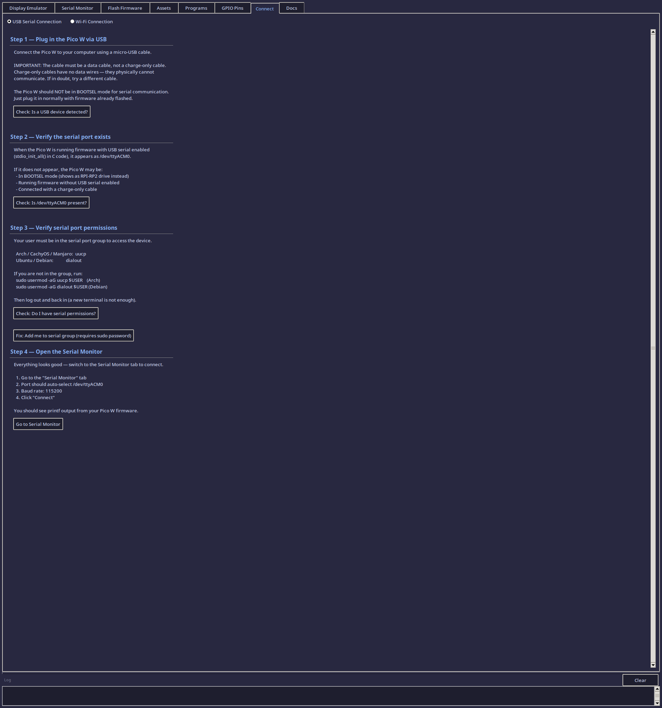
The "Fix: Add me to serial group" button auto-detects the correct group, tries pkexec for a graphical sudo prompt first, falls back to opening a terminal emulator with the command, and shows a confirmation dialog before running.
Wi-Fi Walkthrough¶
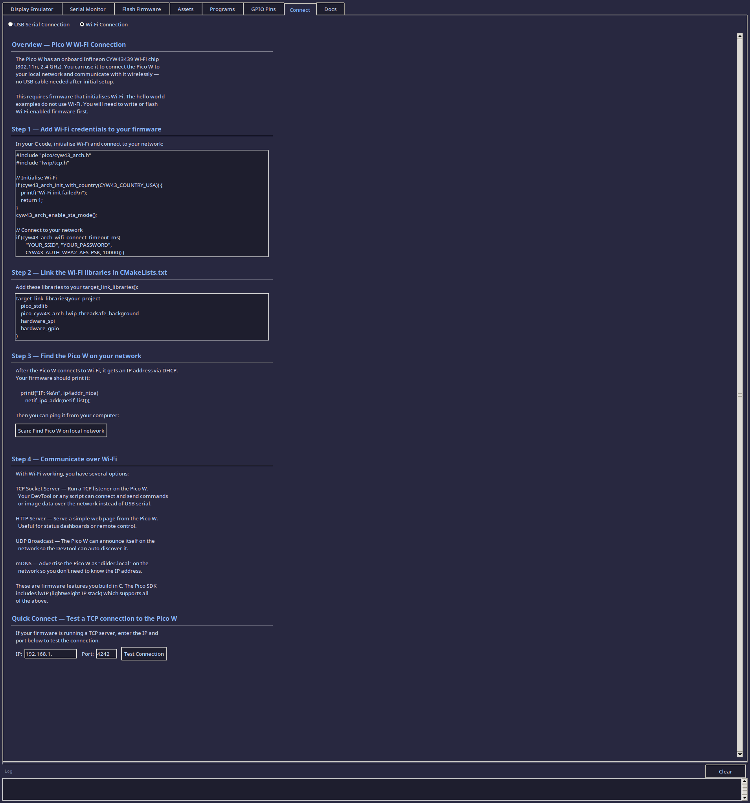
Guides you through adding Wi-Fi support to your Pico W firmware:
| Step | What it covers |
|---|---|
| Overview | Explains the CYW43439 Wi-Fi chip, 802.11n 2.4 GHz capability. |
| Step 1 — Add Wi-Fi credentials | Provides the exact C code to initialise Wi-Fi and connect to a network. Copy-paste ready. |
| Step 2 — CMake configuration | Shows which library to link: pico_cyw43_arch_lwip_threadsafe_background. |
| Step 3 — Find Pico on network | Network scan button that checks the ARP table for reachable devices. Shows how to print the IP from firmware. |
| Step 4 — Communication options | Explains TCP sockets, HTTP server, UDP broadcast, and mDNS discovery. |
| Quick Connect | Enter an IP and port to test a live TCP connection to the Pico W. Shows success, timeout, or connection refused. |
Tab 8 — Documentation¶
Built-in searchable documentation for the entire DevTool application.

Layout:
- Left sidebar — Table of contents. Click any section to jump to it.
- Right panel — Full documentation text with syntax-highlighted headings and code blocks.
- Search bar — Type a keyword and press Find. All matches are highlighted in yellow. Click Clear to reset.
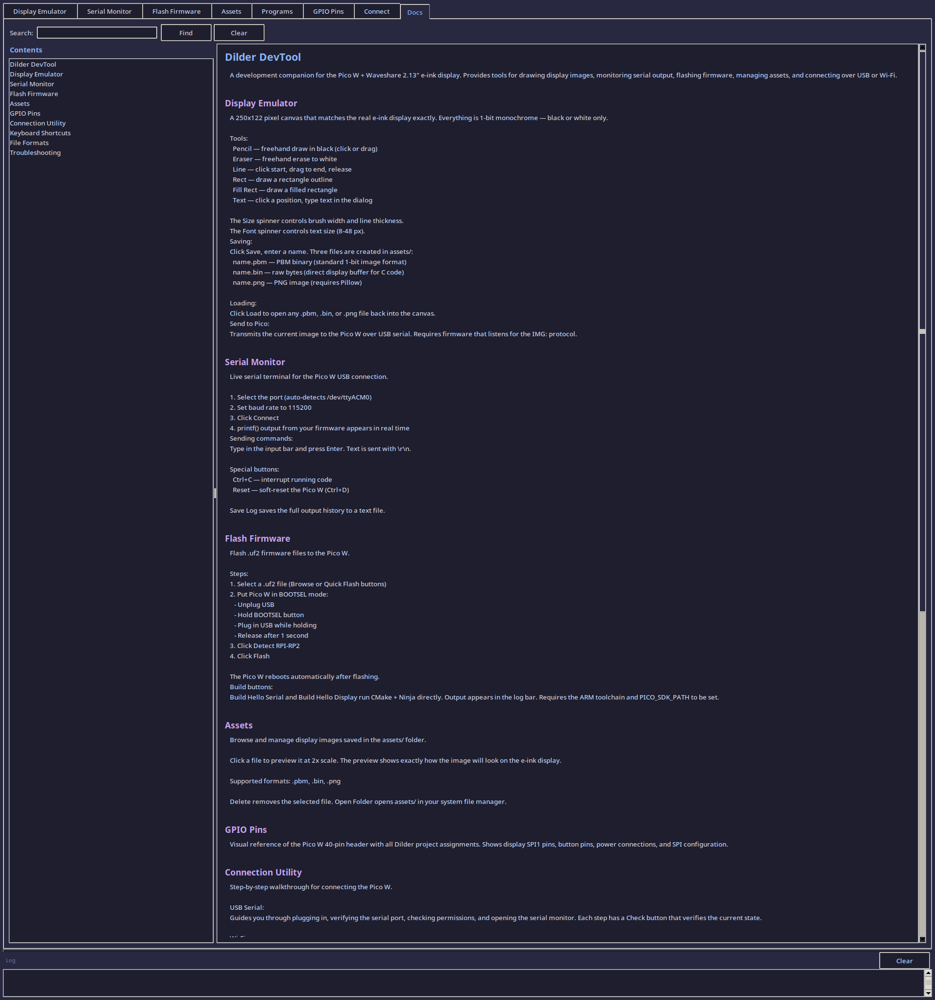
Sections covered:
- Display Emulator (all tools, saving, loading, send to Pico)
- Serial Monitor (connecting, sending, special buttons, log saving)
- Flash Firmware (BOOTSEL steps, build buttons)
- Assets (browse, preview, delete)
- GPIO Pins (pin assignments)
- Connection Utility (USB and Wi-Fi)
- Keyboard Shortcuts
- File Formats (PBM, BIN, PNG with byte layout)
- Troubleshooting (common errors and fixes)
This tab means you never need to leave the DevTool to look up how something works.
File Formats¶
PBM (Portable Bitmap — P4 Binary)¶
Standard 1-bit image format. Header followed by packed binary data.
Each byte holds 8 pixels, MSB = leftmost pixel. 1 = black, 0 = white.
BIN (Raw Display Buffer)¶
No header — just the raw packed bytes in the same format the Waveshare display driver uses.
- Byte width:
ceil(250/8)= 32 bytes per row - Total: 32 x 122 = 3,904 bytes
- Bit order: MSB first within each byte
1= black pixel,0= white pixel
To use in C code on the Pico W:
// Load from filesystem or embed as a const array
const uint8_t image_data[3904] = { /* bin file contents */ };
EPD_2in13_V3_Display(image_data);
PNG (Portable Network Graphics)¶
Standard PNG format, 250x122 pixels, 1-bit depth. Requires Pillow to export. Can be opened in any image viewer or editor.
Architecture Overview¶
DevTool/
devtool.py # Single-file application (~3400 lines)
requirements.txt # Python dependencies
README.md # Full documentation
assets/ # Saved display images (created automatically)
*.pbm # PBM binary 1-bit images
*.bin # Raw display buffer bytes
*.png # PNG exports (if Pillow available)
Class Structure¶
| Class | Parent | Purpose |
|---|---|---|
DilderDevTool |
tk.Tk |
Main application window, notebook tabs, log bar, Docker health check |
DisplayEmulator |
ttk.Frame |
E-ink canvas, drawing tools, save/load/send |
SerialMonitor |
ttk.Frame |
Serial connection, read thread, output display |
FlashUtility |
ttk.Frame |
UF2 selection, BOOTSEL detection, flash copy |
AssetManager |
ttk.Frame |
File list, preview canvas, delete/open |
ProgramsTab |
ttk.Frame |
Animated programs, Docker builds, deploy buttons |
PinViewer |
ttk.Frame |
Static GPIO reference text |
ConnectionUtility |
ttk.Frame |
USB/Wi-Fi setup walkthrough with live checks |
DocumentationTab |
ttk.Frame |
Searchable built-in documentation with TOC sidebar |
Startup Behavior¶
At launch, the DevTool:
- Checks for missing dependencies (Tkinter, pyserial) and offers to install them
- Creates the 8-tab UI with a resizable log bar
- Runs a background Docker health check (500ms after UI ready) that verifies:
- Docker binary exists
- Docker daemon is running
- docker-compose is available
- Build files exist (docker-compose.yml, Dockerfile)
- Shared display library directory exists
Results appear in the log bar as [startup] Docker toolchain ready. or with specific issues listed.
Threading¶
The serial monitor runs a background daemon thread (_read_loop) that continuously reads from the serial port. All UI updates from the thread go through winfo_toplevel().after(0, callback) to stay on the Tkinter main thread.
Build operations in the flash utility, Docker image builds, and serial send also run in background threads. All build output is now logged directly without keyword filtering — every line from Docker and Ninja appears in the log bar for full transparency.
Troubleshooting¶
| Problem | Solution |
|---|---|
ModuleNotFoundError: No module named 'tkinter' |
Install Tk: sudo pacman -S tk (Arch) or sudo apt install python3-tk (Debian) |
ModuleNotFoundError: No module named 'serial' |
pip install pyserial (not serial — that's a different package) |
| Text tool renders blocks instead of letters | Install Pillow: pip install Pillow |
| Serial monitor can't connect | Check that the Pico W is plugged in and running firmware. Verify with ls /dev/ttyACM*. Check serial group membership. |
| No serial ports in dropdown | Click Refresh. If still empty, the Pico W may be in BOOTSEL mode or not connected. |
| Flash button says "not detected" | Put the Pico W in BOOTSEL mode: unplug, hold BOOTSEL, plug in, release. Then click Detect. |
| Build buttons fail | Verify PICO_SDK_PATH is set and arm-none-eabi-gcc is installed. Run python3 setup.py --status to check. |
| Docker builds fail | Check [startup] messages in the log bar. Run python3 setup.py --step 15 to set up Docker. |
| Canvas drawing is slow | The canvas uses individual rectangles per pixel at 3x scale. For large fills, there may be brief lag — this is a Tkinter limitation, not a bug. |
| PNG save/load not working | Install Pillow: pip install Pillow. PBM and BIN formats work without it. |